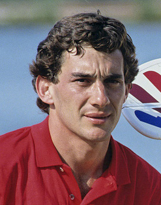

Tudo sobre Ayrton Senna
Ayrton Senna da Silva ONM • ComRB • CvMA • OME (São Paulo, 21 de março de 1960 – Bolonha, 1 de maio de 1994) foi um piloto de Fórmula 1, empresário e filantropo brasileiro. Senna foi campeão da categoria de piloto três vezes, em 1988, 1990 e 1991. Começou sua carreira competindo no kart em 1973 e em "carros de fórmula" em 1981, quando venceu as Fórmulas Ford 1600 e 2000. Em 1983 alcançou o título de campeão do Campeonato Britânico de Fórmula 3 batendo vários recordes. Seu desempenho impulsionou sua ascensão à Fórmula 1, fazendo sua primeira aparição na categoria no Grande Prêmio do Brasil de 1984 pela equipe Toleman-Hart. Em sua primeira temporada, Senna pontuou em cinco corridas, fechando o ano com treze pontos e a nona posição na classificação geral dos pilotos. No ano seguinte, ingressou na Lotus-Renault, pela qual venceu seis grandes prêmios ao longo de três temporadas.
Carreira
Em 1988, juntou-se ao francês Alain Prost na McLaren-Honda, com o qual teve grande rivalidade. Senna venceu oito etapas daquela temporada e sagrou-se campeão mundial pela primeira vez. Após a polêmica final de 1989 com Prost que resultou na segunda colocação do torneio, ele retomou o título em 1990, vencendo novamente na temporada seguinte, tornando-se o piloto mais jovem a conquistar um tricampeonato na Fórmula 1 até então. Em 1993, Senna foi vice-campeão, vencendo cinco corridas. Transferiu-se para a Williams em 1994, onde disputou apenas três etapas, a última sendo o Grande Prêmio de San Marino, onde se acidentou e morreu, no Circuito de Ímola. Ao todo, Senna participou de 161 grandes prêmios na Fórmula 1, alcançando 41 vitórias, 80 pódios, 65 pole positions e 19 voltas mais rápidas.
Cotidiano
Além das corridas de carros, Senna dedicava-se a jet skis, motos, aeromodelos e principalmente helicópteros. Também administrava diversas marcas e empreendimentos, além de ter patrocinado vários programas de assistência filantrópica, principalmente os ligados a crianças carentes. Depois de morrer, sua irmã, Viviane Senna, fundou o Instituto Ayrton Senna, uma organização não governamental que oferece oportunidades de desenvolvimento humano a crianças e jovens de baixa renda. Além disso, o personagem Senninha foi criado com a intenção de atingir o público infantil com os ideais do piloto, como a superação, dedicação e o gosto pela vitória.
